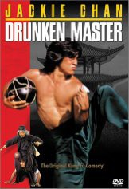

#4134 Sie nannten ihn Knochenbrecher
Alternativ: Drunken Master (Englischer Titel)
 
 IMDB-Wertung: 7.6 / 10
IMDB-Wertung: 7.6 / 10  Metascore: 0
Metascore: 0 
The father of Wong Fei-hong, who has been attempting to teach his son kung-fu, but has found him too disobedient to teach and decides to send him off to his uncle, a cruel and torturous master of the 8-Drunken Genii kung-fu. After much suffering the son comes back to rescue the father from an assassin who has also previously humiliated Naughty Panther.
Jahr: 1978
Dauer: 111 Minuten
FSK: 12
Land: Hong-Kong Studio: UAP Video GmbHTonspuren: DD2.0 - ,
Untertitel: Deutsch, Japanisch, Englisch,
Auflösung: 1080p (1920x800) Größe: 9758 MB
Genre: Action, Komödie
Regisseur: Woo-Ping Yuen
Drehbuch: Hans Christian Andersen
Soundtrack:
Darsteller:
Datei: X:\HD-Eastern-Collections\Jackie Chan\Sie nannten ihn Knochenbrecher (1978, FSK12, 1920x800).mkv seit 26.07.2016
Festplatte: HD Eastern+Western
 Es gibt insgesamt 58 Filme in der Gruppe 'HD-Eastern-Collections\Jackie Chan'
Es gibt insgesamt 58 Filme in der Gruppe 'HD-Eastern-Collections\Jackie Chan'